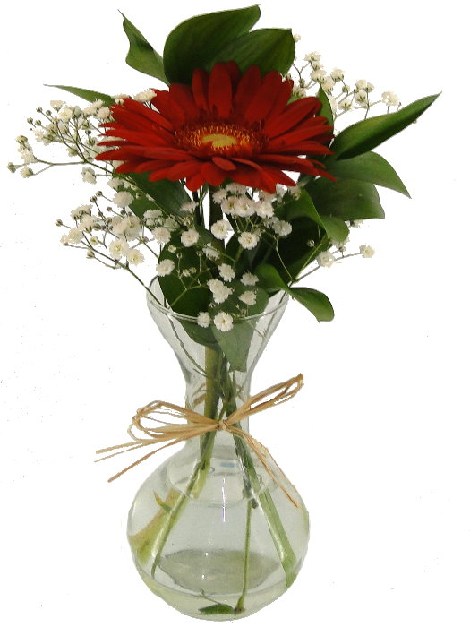

Como são as Gérberas
Esta página contém informações sobre o propósito deste site.
- Significado das Gérberas

As géberas podem ter vários significados, um mais lindo que o outro.
- Gérberas Vermelhas 
Amor Romântico: Opte por tons de vermelho ou rosa para expressar sentimentos românticos.
- Gérberas Rosas

Transmitindo carinho e gratidão, a Gérbera rosa é perfeita para expressar afeto e reconhecimento.
- Três Gérberas

Três gérberas significam "Eu Te Amo" perteito para casais apaixonados.